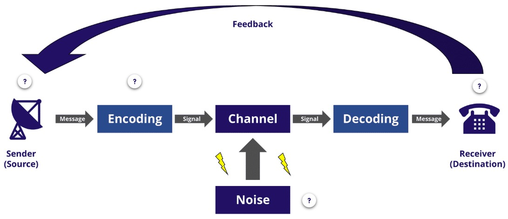

1. Project Management Plan (PMP)
A Project Management Plan is a document that lays out the tasks, time, people and resources needed for the project to be successfully completed.
- It provides information you can use to explain your project to other people.
- The PMP is a tool for allocating work and managing people as well as understanding the time and cost of a project. It is developed and owned by the project manager.
- Major changes to the PMP must be approved by the Project Board.
1.1. PID and PMP
| PID | PMP |
|---|---|
| Why? Why do you want to do the project? |
How? What tasks are needed to achieve this? |
| What? What will the project give you that you don’t have now? |
Who and When? Who will do these tasks, when and in what order? |
1.2. Producing a PMP
- Divide the project into component tasks to give a full list of things that must be done to complete the project.
- Estimate the time each task will take to complete.
- Order the tasks in the correct sequence.
- Determine the people, money and other resources needed to complete each task.
- Check resource availability.
- Review – Can this project be achieved?
2. Communication
- A vital part of managing a project is managing the lines of communication.
- A formal communication strategy will help you to organise your communications.
- You need to consider who you must communicate with, when you need to communicate, and the purpose of the communication.
2.1. Communication information
The Project Manager is required to communicate her or his plans to stakeholders throughout the project life cycle
- Initiation : An idea for an emerging technology emerges. This needs to be communicated to others.
- Planning
- Through electronic communication
- In person
- Execution : Doing the tasks identified within the project needs communication and feedback.
- Closure : Similarly, signing off on a project needs communication to check details and receive feedback.
2.2. Claude Shannon’s Communication Process Cycle Model

- Encoding the message: Sender must choose an appropriate medium and encode a message that is clear, appropriate, objective(preferably free from bias), detailed, but also persuasive and succinct.
- Noise: Misunderstanding and barriers can emerge which can disrupt, or disort the original meaning of the sender’s message. Misunderstanding can cause tension, conflict, and subsequent project delays.
2.3. Communication Channels
- Face-to-Face
Face-to-face communication is effective for persuading others and seeking agreement. It is also useful to address sensitive issues e.g. conflict and tension. - Electronic communication
It is effective for communicating across distances, quickly and cheaply.
3. Tasks of the Project Management Plan
3.1. Breaking down tasks
The purpose of the PMP is to allow the estimation of time and cost, and the allocation of people and resources. Tasks should be broken down enough to allow you to do this.
3.2. Milestones
- Milestones are points in a project that identify when you have completed an important stage of the project.
- They are useful to track progress at a high level and to communicate to people outside the project.
- They are not activities, but reflect the completion of a series of activities and the production of key deliverables.
3.3. Estimating time
The part of planning that people usually find the hardest is estimating how long the project will take. Accurate estimating can be difficult. Most people are not naturally good at it, this is because they don’t know how to do it.
- Ask someone who does know
- Use any available rules of thumb
- Model it against other similar tasks
- Break down the task further until you get tasks you can estimate
- Make an assumption
3.4. Estimating Methods
- Bottom-Up Estimating
Bottom-up estimating allows you to create an estimate for the project as a whole. To analyze from the “bottom up,” break larger tasks down into detailed tasks, and then estimate the time needed to complete each one.
Because you’re considering each task incrementally, your estimate of the time required for each task is likely to be more accurate. You can then add up the total amount of time needed to complete the plan. - Top-Down Estimating
In top-down analysis, you develop an overview of the expected timeline first, using past projects or previous experience as a guide.
It’s often helpful to compare top-down estimates against your bottom-up estimates, to ensure accuracy. - Comparative Estimating
With comparative estimating, you look at the time it took to do similar tasks, on other projects. - Parametric Estimating
With this method, you estimate the time required for one deliverable; and then multiply it by the number of deliverables required. - Three-Point Estimating
To build in a cushion for uncertainty, you can do three estimates – one for the best case, another for the worst case, and a final one for the most likely case.
Although this approach requires additional effort to create three separate estimates, it allows you to set more reasonable expectations, based on a more realistic estimate of outcomes.
3.5. Contingency
In real life things may go wrong. You deal with this by setting aside time and money that you will try not to use, but will if there are problems. This is called contingency.
- Low risk, familiar tasks: 5-10% contingency
- Medium risk, less familiar tasks: 20-25% contingency
- High risk, unfamiliar tasks: 50% contingency
3.6. Ordering the tasks
- Predecessor dependencies : Some tasks can only be done when other tasks have been done first
- External dependencies : Some tasks are done outside the project, but the project cannot move forward without them.
- Availability of people : Some tasks can be sped up by adding more people, while others cannot.
3.7. Dealing with costs
- Staff wages
- Renting space
- Materials
- Tools
- Cost estimation – the more you have to guess costs, the more contingency you need
4. Creating your PMP
- Brainstorm a task list
- Add the tasks to the PMP template
- Estimate times and dependencies
- Allocate staff to tasks
- Work out a schedule
- Work out costs
- Add in milestones and contingency
- Review and amend
5. Project Pitch
5.1. What is a pitch?
- Pitch is a presentation of a business idea to potential investors
- People pitch a business because they need resources
- If the goal is to raise startup cash, the target of the pitch is an investor.
- Other businesses pitch to potential customers to sell their product.
- Some organizations pitch because they need a partner or resource to help them accomplish their mission.
5.2. What makes a compelling pitch?
- A good pitch balances business and emotional needs.
- A good pitch is succinct.
- A good pitch tells a story.
- A good pitch focuses on benefits
5.3. Pitching Essentials
- Know who you’re pitching to
- Understand their needs and motivations
- Go deep into what challenges they face
- Create a beautiful and powerful presentation
- Have an up-to-date rendering/mock-up of your product
- Solicit testimonials from current users or investors
- Film promotional or explainer videos
- Craft an exciting intro
- Explain the business opportunity
- Highlight the underlying business model
- Answer why you can beat the market
- Explain who you are and shape your story
- Cover your current traction
- Make your ask incredibly clear
- Keep it short
- Anticipate and answer key questions (before your audience asks)
- Be ready to deal with objections and tough questions
- Rehearse